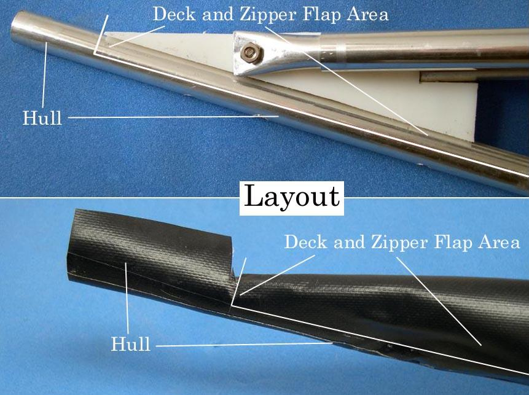

| Zipper to Stem Attachment ( 4a of 11 ) | Menu Previous Page Next Page |
|

Zipper Flap Layout - The front end of the HDPE stem plate is the boundary for both the deck skin and zipper flap. All PVC skin material from that point forward to the bow is part of the hull. The hull skin will wrap around the stem tube during assembly and will be covered with vinyl tape.
|
|